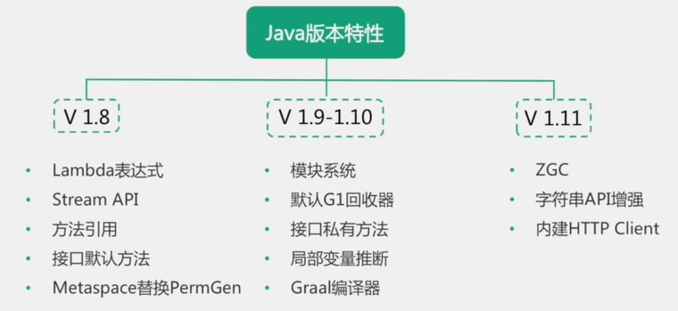
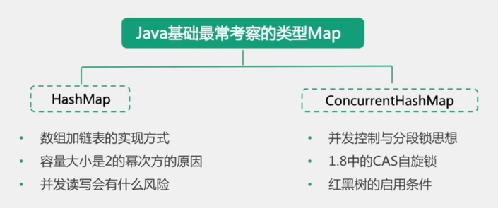

首先来看下Java语言特性，下面是一张结构图

Java并发
Java版本差异新特性

Java数据类型
Java 支持的数据类型包括基本数据类型和引用类型。
基本数据类型如下：
- 整数值型：byte、short、int、long
- 字符型：char
- 浮点类型：float、double
- 布尔型：boolean
- 整数型：默认 int 型，小数默认是 double 型。Float 和 Long 类型的必须加后缀。比如：float f = 100f
引用类型声明的变量是指该变量在内存中实际存储的是一个引用地址，实体在堆中。
引用类型包括类、接口、数组等。
特别注意，String 是引用类型不是基本类型。
值传递和引用传递
- 值传递，是对基本型变量而言的，传递的是该变量的一个副本，改变副本不影响原变量。
- 引用传递，一般是对于对象型变量而言的，传递的是该对象地址的一个副本，并不是原对象本身。
一般认为，Java 内的传递都是值传递，Java 中实例对象的传递是引用传递。
Java中只有值传递, 方法中传递的都是基本类型副本的值, 或者是引用类型的地址的值. 所以直接修改值不会影响原来的值, 但是如果根据引用类型的地址去修改对象, 那么那个地址指向的对象是会被改变的.
Java常用集合

Java对象引用
强引用
弱引用
软引用
虚引用